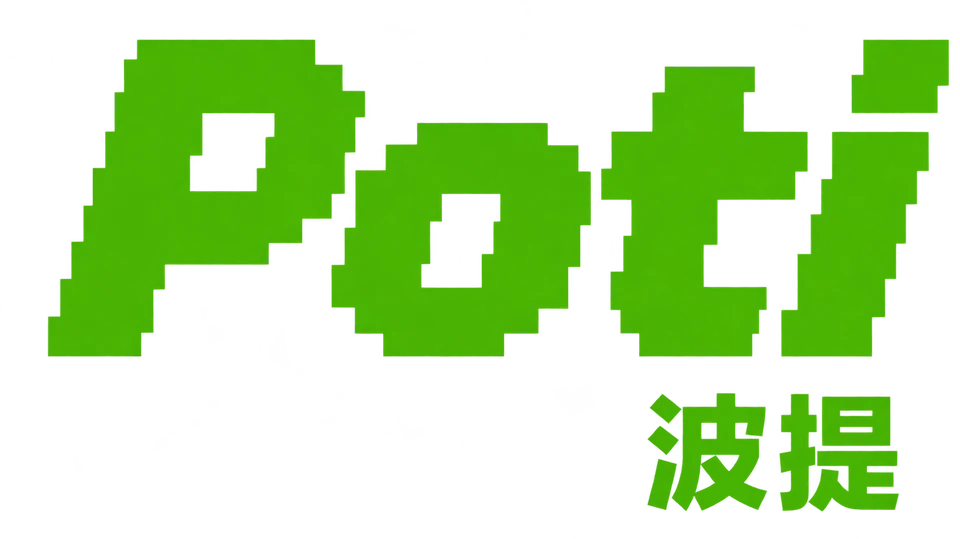
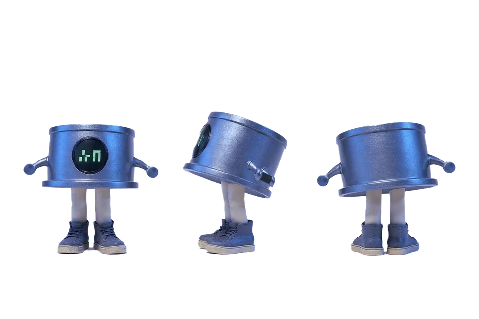
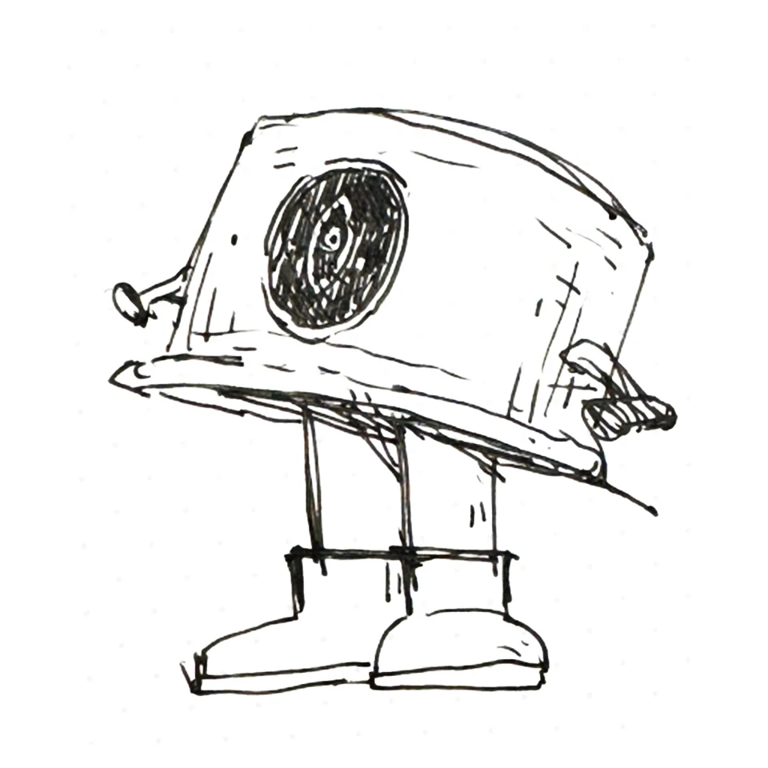
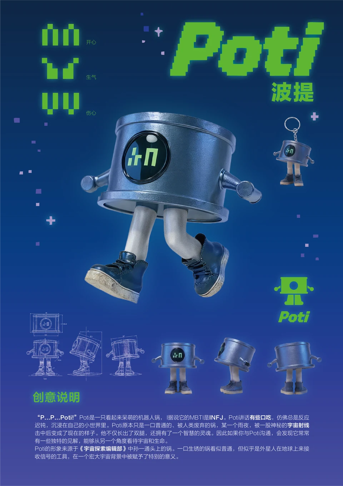

CHARACTER & IP / 2025.08
Poti


角色介绍
Poti（波提）是一只呆萌、慢半拍的机器人锅。它原本是一口被人类遗弃的普通锅，在一个雨夜被神秘的宇宙射线击中，长出了双腿，也拥有了自己的意识。它说话有些口吃，常常沉浸在自己的小世界里，却会偶尔冒出关于宇宙与生命的独特见解。
Poti 的灵感来自电影《宇宙探索编辑部》中孙一通戴在头上的锅。设计将日常器物转化为一个有情绪、有性格的角色，让一口普通的锅成为连接生活与宇宙想象的载体。

从草图到形象
前期草图以锅的圆筒轮廓为主体，将两侧锅柄转化为短小的手臂，再加入细长的双腿与宽大的鞋子。略微倾斜的身体和不太协调的比例，让 Poti 看起来有些笨拙，也显得亲近。
最终形象延续了草图中的身体结构，以银蓝色金属质感保留旧锅的器物特征，并将正面的圆形区域发展为表情屏幕。绿色像素表情呈现开心、生气与伤心等情绪，与金属身体形成对比，让它在机械感之外，也有直观、柔软的情绪表达。
